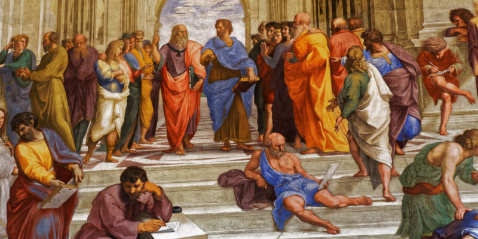
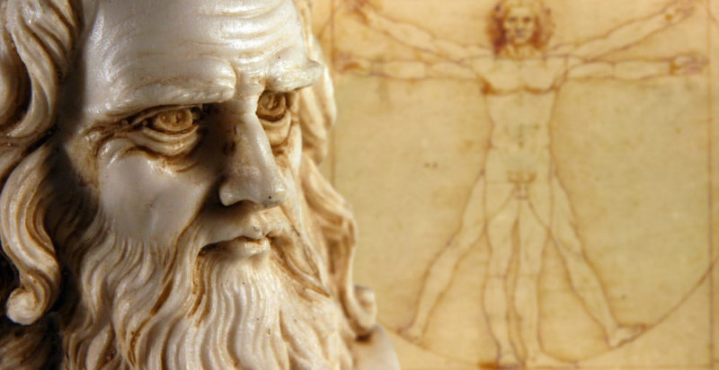
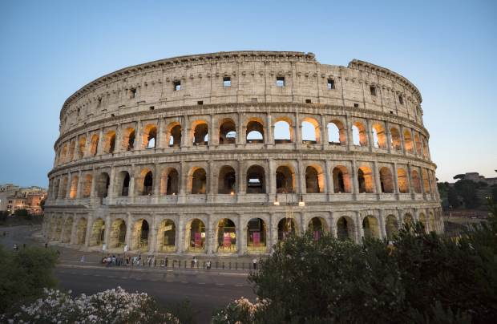
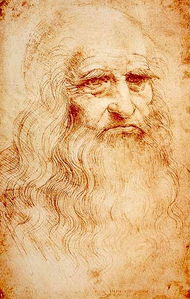

¿Qué es?
El Renacimiento fue un importante movimiento artístico y filosófico que se caracterizó por un redescubrimiento de la cultura grecorromana y la filosofía clásica. Se originó en Italia a fines del siglo XV y estuvo inspirado en el humanismo, un movimiento que antepuso al ser humano y la razón por encima de las creencias religiosas.
El movimiento renacentista propició importantes avances científicos e invenciones, como la teoría heliocéntrica de Nicolás Copérnico (que proponía el Sol como centro del universo, en lugar de la Tierra) y la imprenta, desarrollada por Johannes Gutenberg en 1440.
Con el Renacimiento, la razón como facultad propia del ser humano pasó a ser el nuevo objeto de veneración. Este cambio cultural, junto con la invención de la imprenta, permitió difundir de manera masiva textos que promovían la cultura y los valores grecorromanos, centrados en la experiencia humana.
El Renacimiento fue un período de transición entre la Edad Media y la Moderna. Sus cambios, introducidos de manera progresiva y sostenida, impactaron significativamente en todos los ámbitos de la vida. Para los pensadores de la época, representó un “nuevo nacimiento” del saber, tras un largo período de control del conocimiento por parte de la Iglesia católica.
Características del Renacimiento
La recuperación de la Antigüedad clásica. El Renacimiento volvió sobre ideas, valores y principios filosóficos, científicos y artísticos de la Antigüedad grecorromana, como el antropocentrismo y el interés por comprender y representar los fenómenos naturales.
La revolución científica y cultural. El desafío a las ideas establecidas fue uno de los mayores aportes del Renacimiento. En este sentido, se destacan las teorías del astrónomo Nicolás Copérnico y del físico Galileo Galilei, como el heliocentrismo, además del método científico, con el que Galileo logró demostrar sus planteamientos.
El auge de los descubrimientos. Grandes innovaciones como la imprenta, las rutas marítimas y la conquista de nuevos continentes despertaron una gran curiosidad y la disposición a conocer y explorar.
La valoración del racionalismo. El dogma cristiano fue cuestionado y creció el interés por adquirir nuevos conocimientos que se basaran en la razón para explicar los fenómenos de la realidad.
La inspiración en el humanismo. El hombre se consideraba el centro del universo y el fin último de la Creación. El Renacimiento dejó de lado el teocentrismo (la idea de Dios como centro de todas las cosas), aunque se mantuvo la creencia en su figura.
La valorización de la naturaleza. Los artistas mostraron un gran interés por la naturaleza y por la representación perfecta del cuerpo humano, que fue un elemento recurrente en la pintura y la escultura.
La importancia del arte. Como creación humana, el arte resultó para el Renacimiento una actividad central y muy valorada. En este contexto, surgió la noción de genio, que se refería a la facultad divina de ciertas personas para crear obras de gran valor estético.
La diversificación de las temáticas. La apertura hacia el arte y el surgimiento de una nueva élite económica dispuesta a financiarlo dio lugar a la aparición de temáticas distintas a la cristiana, como los paisajes y retratos. También se exploraron la mitología y las alegorías grecorromanas.
Pintura y escultura del Renacimiento
La pintura del Renacimiento se nutrió de la invención de la perspectiva lineal, una técnica que permitía crear la ilusión de profundidad sobre superficies planas. La representación del cuerpo humano buscaba reproducir formas anatómicamente perfectas y proporcionadas. Los artistas empleaban juegos de luces y sombras para generar volumen y un alto grado de detalle.
La escultura renacentista tuvo predilección por el movimiento y la perfección anatómica, y empleó materiales como el mármol y el bronce, con un tratamiento minucioso y detallista. Las temáticas, influidas por el interés en la Antigüedad clásica y el humanismo, se centraron en escenas mundanas, mitológicas o de personajes religiosos humanizados. Otros temas importantes fueron los retratos, las alegorías y la narrativa histórica.
Leonardo da Vinci yMiguel Ángel Buonarroti fueron los mayores representantes de la pintura y la escultura del Renacimiento.




